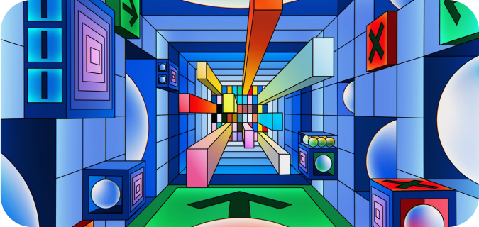

Build continuous integration pipelines with GitHub Actions
GitHub actions provide a really powerful way to integrate continuous integration and delivery into your applications.
Curated collection of articles for busy developers
JavaScript
DevOps
Cloud
Terraform
Architecture
Scalability
Explainers
GitHub actions provide a really powerful way to integrate continuous integration and delivery into your applications.
Python is the most popular programming language out there and it is used for so many different industries.
Learn what is Docker and how Docker is used in the whole software development process.
GitHub actions provide a really powerful way to integrate continuous integration and delivery into your applications.
GitHub actions provide a really powerful way to integrate continuous integration and delivery into your applications.
GitHub actions provide a really powerful way to integrate continuous integration and delivery into your applications.
GitHub actions provide a really powerful way to integrate continuous integration and delivery into your applications.
GitHub actions provide a really powerful way to integrate continuous integration and delivery into your applications.
GitHub actions provide a really powerful way to integrate continuous integration and delivery into your applications.